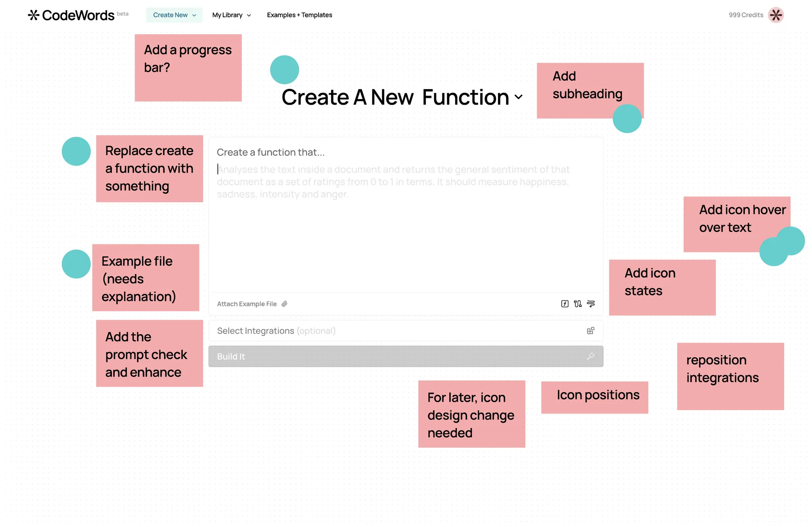

the crit
we were losing patience with ourselves.
every pixel is a hypothesis.

← the 20 drafts that got us here
the crit
every pixel is a hypothesis.

what it taught us
The landing page couldn't explain CodeWords. The form couldn't either. The pink-crit pass on frame 18 told us why: we were trying to cram a multi-actor process into a single-actor surface. Once we let the Architect room have three AI roles out in the open — planning, writing, testing, each visible at its own moment — the product made sense in ten seconds instead of ten minutes.
That's the job when your product is a new noun. Not a brand pass, not a landing page, not even the one hero screen every designer wants to ship. It's a stack of disclosures — each layer making one more piece of the system visible, and no single layer carrying the weight alone.
The crit wasn't feedback. It was the diagnosis.